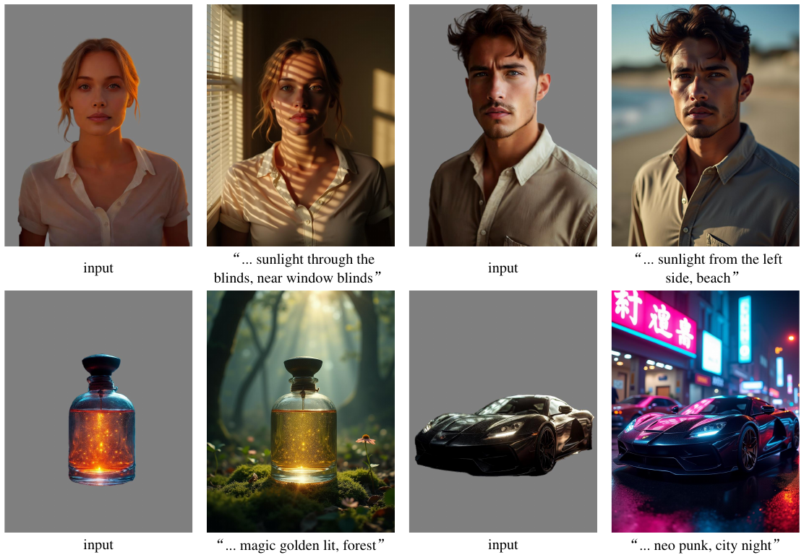
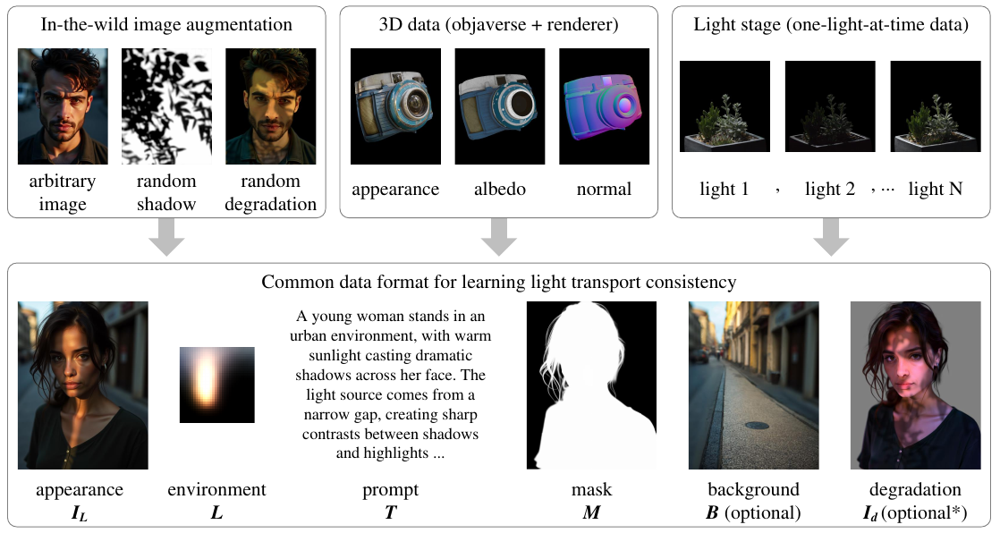
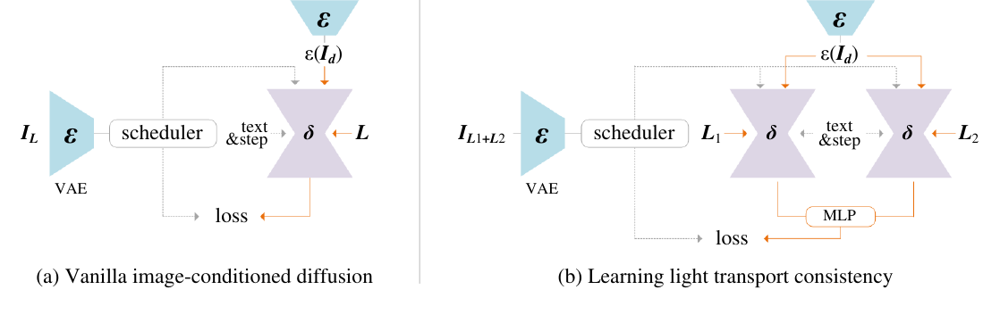
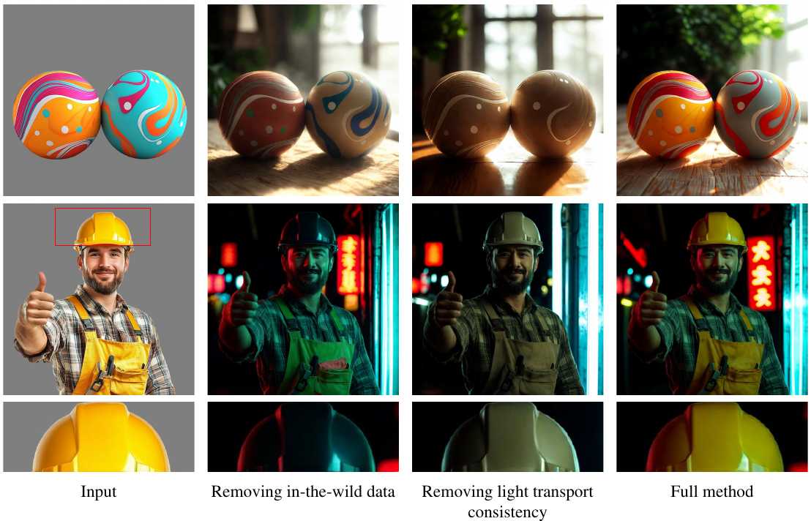
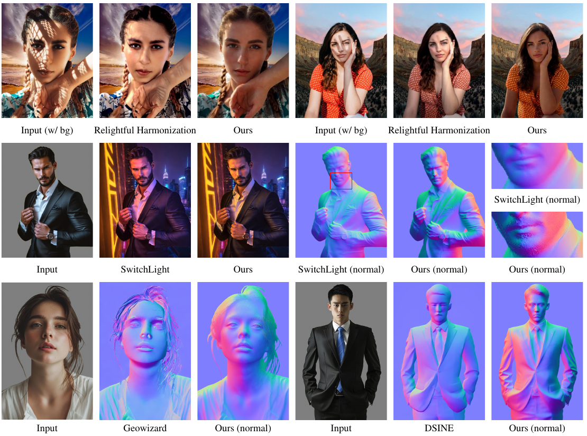
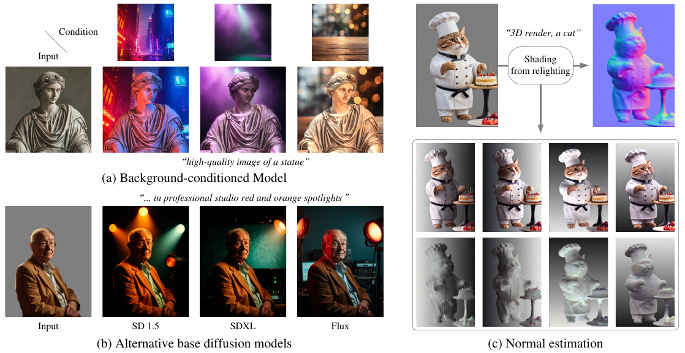

An interactive explainer
IC-Light: Scaling Illumination Editing via Consistent Light Transport
Diffusion models can relight a photograph from a text prompt — turn a daylight portrait into a lamp-lit one, drop neon onto a chrome car, or harmonize a foreground into a new background. The catch is that training such models at scale is famously brittle: the moment your dataset gets diverse enough, the model starts inventing new colors, eating fine detail, or changing the subject. IC-Light fixes this with one move — force the network to obey the physics law light is linear. The result scales to 10M+ images, three backbones (SD 1.5 / SDXL / Flux), and beats the strongest prior baseline by 2× on LPIPS.

Take a portrait shot in the studio. Type "sunlight through the blinds, near window blinds." You want the model to imagine a new lighting environment — soft, directional, striped — and re-render the same person under it. Not a different person who looks similar. Not the same person with a slightly different nose or a brighter shirt. The same person, with the light changed.
In a single-shot demo, this works. In a paper from 2023, it works. But the moment you try to scale that training run — millions of images, multiple data sources, a backbone like Flux or SDXL — the model quietly stops doing what you asked. It starts treating "change the light" as a license to change the picture: the skin tone shifts, hard shadows linger where they shouldn't, the shirt turns yellow. You wanted a relighting model and you got a structure-guided random image generator.
IC-Light is the paper that makes that scale-up actually work. It's an instance of a much older idea — bake a physics law into your loss — but the law in question is so simple that it can be written on a sticky note, and the consequences for training stability are dramatic. The next eight sections walk through it: why scaling breaks, what physical principle gets imposed, how that principle becomes a loss, and what falls out on the other end. Including, almost as an afterthought, a free monocular normal estimator.
0. A graphics vocab cheat sheet
Most of the words in this paper come from computer graphics, not from machine learning. If "environment map", "albedo extractor", and "Lambertian" don't have a picture attached to them in your head yet, spend two minutes here. Skip this section if they already do — none of the math below assumes you read this first; it's just a cheat sheet to make the rest of the blog readable.
Environment map (the $L$ in every equation)
An environment map captures the light arriving at a single point from every direction in the world. Imagine standing at one point in a scene and measuring the colour and brightness of light coming at you from each direction in a full sphere around you — then unfold that sphere onto a flat rectangle. That rectangle is the env map. In IC-Light it's a 32×32×3 HDR image: tiny, but big enough to encode things like "soft window light from the left, dim warm light from above, dark behind." When the model "relights" an object, the env map is what tells it where the new light is coming from.
HDR — pixel values that scale with photons
A normal JPEG is LDR (low dynamic range): each pixel is an integer 0–255 per channel, with a non-linear "gamma" curve applied so the image looks natural on a screen. An HDR pixel is a float, stored without gamma, where doubling the value really does mean twice as many photons hit the sensor. That linearity matters: the addition law in section 2 (two photos add to one photo with both lights on) only holds in raw HDR. Apply gamma or clip to 8 bits and the equation breaks.
Albedo — the object's "true" colour
Albedo is the colour a surface would appear under perfectly uniform white light. It's a property of the material, not of the lighting. A red apple has the same albedo whether you photograph it under sunlight, candlelight, or a blue LED. The trouble is that ordinary photographs confound albedo and lighting — that red apple under blue light looks purple in the photo, even though its albedo hasn't changed. To turn internet photos into training data for a relighting model, you first have to estimate the albedo and strip the lighting away. The network that does this is called an albedo extractor; it's a separate, imperfect neural net, and its mistakes are exactly the noise that destabilises large-scale relighting training.
Light stage — the gold-standard relighting capture rig
A light stage is a physical dome of hundreds of programmable LEDs all aimed at a single seat in the middle. A subject sits inside; the LEDs strobe through their positions one at a time; cameras record each frame. The result is a clean dictionary of "what does the subject look like lit only from direction $i$." Weight those basis images by an env map (using the linearity in section 2) and you can synthesise the subject under any lighting you like. Light stages were invented by Paul Debevec at USC around 2000 and are the source of the cleanest relighting data on Earth — but they're huge, expensive, and only a few hundred subjects have ever been captured by one. Scaling beyond that scarce data is the whole reason IC-Light's in-the-wild and 3D-rendered training tracks exist.
Surface normal — which way is the surface facing?
At every pixel of an image, the surface normal is the 3D unit vector pointing "straight out" of the surface at that point. For a sphere, the normals point radially outward; for a flat wall, they all point the same way; for a face, they fan out from the nose. Normals are usually visualised as RGB images where (R, G, B) encode the (x, y, z) components of the unit vector — so the same surface always lights up in the same colour, which is why all "normal map" visualisations in graphics papers look like the same cyan/magenta/yellow blob. Section 8 recovers normals as a free side-effect of IC-Light's outputs.
One last ML term: latent diffusion
You probably know diffusion-model basics. One detail that matters for this paper: Stable Diffusion (and SDXL, and Flux) don't actually run the diffusion process on raw RGB pixels. They first push the image through a learned encoder $\varepsilon$ — the "VAE encoder" — that compresses the $H \times W \times 3$ image into a much smaller $\tfrac{H}{8} \times \tfrac{W}{8} \times 4$ "latent" tensor. The diffusion happens there, and a decoder maps back to pixels at the end. The VAE is non-linear, which is why the addition-of-light identity in section 2, which is exact for pixels, becomes only approximately true for latents — and why IC-Light needs a learned MLP $\phi$ to bridge the gap.
1. Why scaling relighting is hard
To make a diffusion model relight an image, you condition it on two things: the original image $I_d$ (call it the "degradation," an image whose content you want to keep but whose lighting you want to throw away), and a target environment map $L$ — a low-resolution HDR image of the desired light source. The network learns to produce $I_L$: the same content under the new light. Architecturally this is a Stable-Diffusion UNet with four extra input channels for $I_d$, plus a small MLP that crunches a $32 \times 32 \times 3$ HDR environment down to a $3 \times 768$ prompt-token embedding so the UNet's cross-attention can read it.
The vanilla training objective is what you'd write down on the first try:
$$ \mathcal{L}_{\text{vanilla}} = \big\|\, \epsilon - \delta\!\left(\varepsilon(I_L)_t,\, t,\, L,\, \varepsilon(I_d)\right)\, \big\|_2^2 $$
where $\varepsilon$ is the VAE encoder, $\delta$ is the UNet, and $\epsilon$ is the noise the scheduler added at step $t$. Standard image-conditioned diffusion. Train it on paired (input, target-light, output) tuples and you're done.
Except: where do those paired tuples come from? At small scale, light-stage data — laboratory setups that photograph the same subject under hundreds of controlled illuminations (see vocab). Beautiful, but tiny. To scale, you need synthetic data: take an arbitrary image from the internet, run an albedo extractor (a neural net that tries to guess each pixel's underlying material colour after stripping the lighting), digitally re-render the object as if it had that flat albedo and a fresh, different env map illuminating it, and call that pair a training example. Now your dataset is huge but noisy. The estimated "albedo" has errors — places where the extractor mistook a deep shadow for dark paint, or a bright highlight for a white spot. The synthetic re-rendering has its own systematic errors (it usually assumes Lambertian materials, ignores indirect light, etc.). The text prompts are auto-generated. Cross all those failure modes and the model has a thousand local minima to fall into where it satisfies the loss by changing the wrong things — instead of "change the light," it learns "change anything that gets the noise down".

So the design question is: what regularizer is strong enough to prevent the model from changing the picture, but loose enough to allow it to change the light? Putting a hard identity loss on the foreground would just freeze the image and forbid relighting entirely. A perceptual loss on albedo would leak the underlying albedo extractor's errors back into the model. What's needed is a constraint that talks about light directly, doesn't depend on any particular albedo estimator, and is so universally true that the model can never satisfy it by cheating.
The authors find one in 1990s computational photography.
2. Light adds up: $I_{L_1+L_2}^* = I_{L_1}^* + I_{L_2}^*$
The principle is older than the iPhone and a hundred times more reliable. For any opaque object with a fixed albedo and a fixed pose, the relationship between an environment map $L$ and the object's appearance $I_L^*$ (in raw, HDR pixels — the asterisk matters) is exactly linear:
$$ I_L^* = T\, L \qquad\text{(Eq. 2)}$$
$T$ is a giant matrix that encodes everything intrinsic about the scene — geometry, albedo, reflectance — at every output pixel for every direction the light might come from. It's enormous ($T \in \mathbb{R}^{(h \times w \times 3) \times (32 \times 32 \times 3)}$ in their data format), but its existence as a linear operator is guaranteed by physics. Real light-stage measurements have validated this since Debevec et al. (2000); it's the foundational fact behind image-based relighting.
The corollary, which is where this paper lives, comes from the linearity. Pick any two environment maps $L_1$ and $L_2$. Then:
$$ I_{L_1+L_2}^* \;=\; T(L_1 + L_2) \;=\; T L_1 + T L_2 \;=\; I_{L_1}^* + I_{L_2}^* \qquad\text{(Eq. 3)}$$
This is the kind of statement that sounds suspicious until you remember light doesn't interfere with itself at the wavelengths we care about for cameras. Two photons that hit the same pixel from two different lights contribute additively to the sensor reading. The math just hardens that intuition.
It's worth pausing here, because the rest of the paper is downstream of this single equation. Drag the two lights around in the widget below. You will see four panels: the same shaded sphere lit only by $L_1$, only by $L_2$, the numerical sum of those two images, and the sphere lit by both lights simultaneously. The last two panels are identical, every frame, on every pixel — because the rendering is Lambertian and the math is being honest. The paper's claim is that the diffusion model's outputs should satisfy the same identity.
HDR vs LDR
Notice the asterisk. Eq. 3 holds for raw HDR images — pixels that scale linearly with photon counts. For an 8-bit JPEG, gamma correction breaks linearity, so the addition law is only approximately true. For latent diffusion, the VAE encoder isn't even close to linear. That's a real problem for any training loss that wants to use Eq. 3 directly. The paper's solution to it is the next move.
3. The consistency constraint
The design move is small: force the diffusion model's relighting outputs to obey Eq. 3, as part of training. Concretely, at every training step, generate three relightings — one for $L_1$, one for $L_2$, one for $L_1 + L_2$ — and add a loss penalizing the gap between $I_{L_1+L_2}$ and $I_{L_1} + I_{L_2}$. The intuition is direct: if the model is genuinely changing only the lighting, the addition law has to hold, because $T$ doesn't depend on $L$. If it's changing the underlying picture in any way, the law will break.
In pixel space at infinite precision this would be exactly:
$$ \mathcal{L}_{\text{ideal}} = \big\|\, I_{L_1+L_2}^* - (I_{L_1}^* + I_{L_2}^*)\, \big\|_2^2 $$
But we're in latent diffusion, predicting noise $\epsilon$ at noise level $t$, in a VAE-encoded latent space. None of these transforms are linear. The paper handles this with a small piece of learned plumbing: a 5-layer MLP $\phi(\cdot,\cdot)$ with hidden state 128 that learns the effective addition operation in latent space. So the consistency loss becomes:
$$ \mathcal{L}_{\text{consistency}} = \big\|\, M \odot \big(\epsilon_{L_1+L_2} - \phi(\epsilon_{L_1},\, \epsilon_{L_2})\big)\, \big\|_2^2 \qquad\text{(Eq. 4)}$$
Read this carefully. $\epsilon_{L_i}$ is the noise the UNet predicts when conditioned on environment $L_i$ (and the same noisy latent $\varepsilon(I_L)_t$, the same degradation $I_d$, the same step $t$). $\phi$ is supposed to estimate "what the noise prediction should look like if I added the two environments together." $M$ is the foreground mask — we don't care about consistency in the background, which can legitimately differ between renderings. The $\odot$ is per-pixel multiply.

Why an MLP and not just $\phi(\epsilon_{L_1}, \epsilon_{L_2}) = \epsilon_{L_1} + \epsilon_{L_2}$? Because the VAE and the latent space are non-linear. The authors show in Appendix A that for an eps-prediction model in latent space, the right relationship is $\lambda \epsilon_{L_1+L_2} \approx \epsilon_{L_1} + \epsilon_{L_2}$ with a scaling factor $\lambda \approx 2$ — close to linear but not exactly. By making $\phi$ a learnable adapter, they let the network discover the right "effective sum" rather than baking in an approximation that would have to be tuned per backbone (SD 1.5, SDXL, Flux all behave a bit differently).
The constraint is now ready to plug into training. But it needs $L_1$ and $L_2$ to be generated somehow, on every step, and they need to actually add up to the $L$ being used in the vanilla loss. That's where the next trick comes in.
4. Splitting an environment into $L_1$ and $L_2$
The constraint is "$L_1 + L_2 = L$." Any way of partitioning $L$ additively satisfies that. The most general way: a random binary mask on the 32×32 env map, where masked pixels live in $L_1$ and unmasked pixels live in $L_2$. The sum is exact by construction.
The authors don't even use a full-resolution mask. They sample a $4 \times 4$ binary mask from a uniform distribution, then bilinearly resize it to the env-map size. This gives "soft" splits that span large connected regions of the environment — half the sky, the bottom-left quadrant, a diagonal stripe — rather than salt-and-pepper noise. Each split is a different way of asking the model "if you can do $L_1$ and you can do $L_2$, do you also know they add up?" Over the course of training the model sees thousands of different additive partitions of every env map.
One subtle benefit of this scheme is that the consistency constraint becomes effectively data-augmentation-free in the env-map dimension. The model gets pushed toward respecting Eq. 3 for any additive decomposition of any env map in the training set — a much richer signal than seeing each env map only once per epoch.
5. Watching the principle hold
The pixel-identical equality $I_{L_1} + I_{L_2} = I_{L_1+L_2}$ is the only thing the consistency loss is asking the model to memorize. Here it is on a single object, with the math done exactly right by the renderer:
Same warm-clay sphere with two darker albedo patches (meaning: the underlying material colour really is darker in those two regions, independent of how the sphere is lit). Lit only from the left it shines on the left; lit only from the right it shines on the right. Add the two images and you get exactly the sphere lit by both at once — there's no "blending" operator anywhere in the computation, just $T(L_1+L_2) = TL_1 + TL_2$. The diffusion model's predictions are forced to obey the same identity.
6. The full training objective
Combine the vanilla loss with the consistency loss and you get the entire IC-Light recipe. It's two terms, one hyperparameter:
$$ \mathcal{L} = \lambda_{\text{vanilla}}\,\mathcal{L}_{\text{vanilla}} \;+\; \lambda_{\text{consistency}}\,\mathcal{L}_{\text{consistency}} \qquad\text{(Eq. 6)}$$
Default weights are $\lambda_{\text{vanilla}} = 1.0$ and $\lambda_{\text{consistency}} = 0.1$. The vanilla loss is what makes the model learn relighting at all; the consistency loss is what keeps it honest as the data scales up.
Each training step looks like this:
# 1. Sample a batch.
I_L, L, T_text, M, I_d = next(loader)
# 2. Random 4x4 binary mask, resized to env-map shape.
m4 = (torch.rand(4, 4) < 0.5).float()
m = F.interpolate(m4[None,None], size=(32,32), mode='bilinear')[0,0]
L1, L2 = L * m, L * (1 - m) # by construction, L1 + L2 = L.
# 3. Same noise level and noise for all three forward passes.
t, noise = sample_t_and_noise()
x_t = scheduler.add_noise(VAE.encode(I_L), noise, t)
I_d_lat = VAE.encode(I_d)
# 4. Three UNet evaluations.
eps = UNet(x_t, t, L, T_text, I_d_lat)
eps_1 = UNet(x_t, t, L1, T_text, I_d_lat)
eps_2 = UNet(x_t, t, L2, T_text, I_d_lat)
# 5. The two losses.
L_vanilla = ((noise - eps) ** 2).mean()
L_consistency = (M * (eps - phi(eps_1, eps_2)).pow(2)).mean()
loss = L_vanilla + 0.1 * L_consistency
loss.backward(); opt.step()Notice that the same noise level $t$ and the same noise sample are used across all three UNet passes. The point of the consistency loss is to compare predictions that differ only in their light conditioning, so anything else has to be controlled. The same is true for the degradation $I_d$ and the text $T$.
The compute cost, in detail
Three UNet passes per training step sounds like it should cost three times as much as vanilla training. The paper reports it costs about twice. Two implementation tricks shave the gap:
- Detach the target pass. Of the three passes ($L_1$, $L_2$, $L_1 + L_2$), only the first two need gradients to flow back into the UNet. The third produces the target the MLP $\phi$ is trying to predict, and can be treated as detached. That eliminates one of the three backward passes — and backward is roughly twice as expensive as forward, so this alone saves about a third of the naïve overhead.
- Share what's shareable. All three passes use the same noisy latent $\varepsilon(I_L)_t$, the same timestep, the same encoded degradation $\varepsilon(I_d)$, and the same text embedding. Those upstream computations are done once and reused. Only the env-map cross-attention activations have to be recomputed per pass.
Why activations are the real bottleneck
During training, every intermediate activation has to be kept in GPU memory until the backward pass consumes it. For a UNet operating on 1024×1024 latents with multi-head attention, those activations are enormous — tens of GB per training example, dwarfing the model's own weights. Three forward passes means three sets of activations stored simultaneously. Even with gradient checkpointing (the standard trick of recomputing activations during backward instead of storing them, trading ~25% extra compute for huge memory savings), you still need 80 GB of GPU memory per card to make this fit.
That's the entire reason the paper specifies 8× H100 80GB NVLink:
- H100 is NVIDIA's flagship data-center GPU (~1000 TFLOPs of FP16 with the transformer engine; the next generation after A100).
- 80GB is the high-memory variant. A 40GB H100 would run out of memory just storing the consistency-loss activations; this work isn't possible on the cheaper card.
- NVLink is NVIDIA's chip-to-chip interconnect, ~900 GB/s between cards. Standard PCIe between cards is ~64 GB/s. The 14× speedup matters because data-parallel training synchronises gradients between cards at every step; PCIe-only servers would be bottlenecked on inter-card traffic.
That's about $250k of hardware in one server. The training runs reported below would take months, not weeks, on a more typical setup.
Why each backbone gets its own recipe
The paper trains three different base models — SD 1.5, SDXL, and Flux — and each one has its own training schedule because each one has different constraints.
SD 1.5: 100 hours. About 1B parameters, 512×512 native resolution. The smallest of the three; full fine-tuning fits comfortably. 100 hours × 8 GPUs ≈ 800 GPU-hours ≈ 33 GPU-days, total wall-clock about 4 days.
SDXL: 80 hours at 512, then 60 hours at 1024. About 3.5B parameters, 1024×1024 native. The two-stage schedule is a resolution warmup: stage 1 uses smaller latents and larger batch sizes to learn the basic relighting behaviour cheaply, then stage 2 switches to full resolution to refine fine detail. This is standard practice for high-resolution diffusion models — training at 1024 from scratch would cost several times more wall-clock time for worse results, because each step is 4× the cost (4× pixel count) and you'd need many more steps to converge.
Flux: multi-stage with most weights frozen. Flux is the giant — 12B parameters. Full fine-tuning would need roughly:
- 12B params × 4 bytes (FP32) = 48 GB just to hold the weights.
- 2× that again for the Adam optimizer's first and second moments = another 96 GB.
- Plus activations for backprop through every layer.
Even spread across 8× 80 GB cards, that's painfully tight. The paper's solution: don't fine-tune the whole model. Freeze most of Flux's weights and train only:
- LoRA adapters — small rank-decomposed weight deltas added to specific layers. Maybe 0.5–2% of the total parameter count ends up being trainable.
- The newly-added input/output projections for the env map and the degradation conditioning. These layers didn't exist in the original Flux and have to be learned from scratch.
"Freezes parts of the gradient graph" is a precise way of saying "doesn't compute gradients for most of the model." If most weights aren't being updated, you don't store their optimizer state, and you don't need full backprop through them. The result: a 12B-parameter model whose effective trainable size is more like 100M — which fits in memory and trains in tractable time. It's the same trick that lets people fine-tune LLaMA-70B on a single consumer GPU; IC-Light just runs it at industrial scale.
The data curriculum, and why light-stage data is held back
The data sampling probabilities aren't fixed — they shift across training:
| iterations | in-the-wild | 3D rendering | light-stage |
|---|---|---|---|
| 0 – 100k | 0.50 | 0.50 | 0.00 |
| 100k+ (linear ramp) | 0.35 | 0.35 | 0.30 |
Light-stage data is the highest-quality of the three sources but also the narrowest — only a few hundred subjects have ever been captured by one. If you put 30% light-stage data in front of an untrained UNet from the start, the model would overfit to those specific people and props before it had learned the broad task. You'd end up with a relighting model that handles the dozen subjects in the USC ICT dataset beautifully and fails on anything else.
So the paper starts with the noisy-but-vast in-the-wild and 3D-rendered tracks. These teach the model "what relighting is" across millions of subjects. Once that's learned (after 100k iterations), the clean light-stage data ramps in and acts as a precision pass — pristine ground truth that sharpens the model's outputs without re-teaching it the basics. The linear ramp avoids the loss spikes you'd get from a sudden distribution shift.
Read another way: this is pretrain-then-finetune done within a single training run, by reweighting the data mixture instead of starting a second training job. Curriculum learning done by data, not by loss schedule or learning rate.
7. Results
All of the above is worth doing if and only if the consistency loss actually changes the model's behavior at evaluation time. The ablation in Table 1 is the cleanest case for it.
| Method | PSNR ↑ | SSIM ↑ | LPIPS ↓ |
|---|---|---|---|
| Prior baselines | — | — | — |
| SwitchLight | 18.45 | 0.7024 | 0.3245 |
| DiLightNet | 21.78 | 0.8013 | 0.1721 |
| Ablations | — | — | — |
| w/o light transport consistency | 20.32 | 0.7542 | 0.1927 |
| w/o in-the-wild augmentation data | 23.95 | 0.8723 | 0.1115 |
| w/o 3D rendering data | 22.10 | 0.8041 | 0.1298 |
| w/o light-stage data | 23.70 | 0.8501 | 0.1077 |
| Full method (Ours) | 23.72 | 0.8513 | 0.1025 |
Evaluation on 50,000 held-out 3D-rendered samples; lower LPIPS is the most reliable proxy for perceptual quality (Paper Table 1). Italics flag a result with a known evaluation bias — see below.
The row that matters most is "w/o light transport consistency." Removing the LTC loss takes LPIPS from $0.1025$ to $0.1927$ — almost a 2× regression — and drops SSIM from $0.85$ to $0.75$. This is despite the data, the architecture, and every other training detail being identical. The loss alone accounts for it.
The other oddity worth flagging: "w/o in-the-wild augmentation data" gets the best PSNR and SSIM. The authors note this is an evaluation artifact — the test set is drawn from the 3D rendering distribution, which is exactly what's left when you remove in-the-wild data, so the model trivially overfits to it. On LPIPS, which is less sensitive to this bias, the full method still wins. And on out-of-distribution real photos the in-the-wild data is essential, as the qualitative figure makes obvious:

Below, four of the paper's headline qualitative results, in the form the authors actually pitch the model — text-driven relighting with background generation. Flip through them:
And here is the comparison against the best prior diffusion-based relighting model (Relightful Harmonization) and the strongest specialist (SwitchLight). Two takeaways: IC-Light handles harsher input lighting without baking shadows into the output, and — surprisingly — its normal maps are better than dedicated normal estimators like GeoWizard and DSINE, despite never being trained on normal supervision.

8. Bonus: geometry for free
The last claim in the paragraph above sounds too good. A relighting model that wasn't trained on geometry data, beating dedicated 3D-supervised normal estimators? The mechanism behind it is a one-paragraph application of the same consistency principle the rest of the paper is built on.
Take any object and ask IC-Light to relight it from four directional lights — up, down, left, right. The four outputs $I_{L_\text{up}},\, I_{L_\text{down}},\, I_{L_\text{left}},\, I_{L_\text{right}}$ are the same object, same albedo, same geometry, lit from different sides. To recover the shading (and from the shading, the surface normals), divide out the albedo. They estimate albedo simply as the per-pixel mean of all four:
$$ A \;=\; \tfrac{1}{4}\!\left(I_{L_\text{up}} + I_{L_\text{down}} + I_{L_\text{left}} + I_{L_\text{right}}\right), \qquad S_{L_i} \;=\; I_{L_i} / A $$
What that division actually means
The "$/$" in $S_{L_i} = I_{L_i} / A$ is not matrix division. There's no linear-algebra inverse happening. It's elementwise (per-pixel) division: for every pixel $(x, y)$ and every colour channel $c$,
$$ S_{L_i}(x, y, c) \;=\; \frac{I_{L_i}(x, y, c)}{A(x, y, c)} $$
In NumPy or PyTorch this is one line: S = I_light / A. The image-shaped tensors
are just grids of numbers; dividing them means dividing the numbers position-by-position.
Why does that particular division do anything useful? Because of the simplest possible model of how a photograph forms. For a matte surface lit by one light:
$$ \underbrace{I_{L_i}(x, y)}_{\text{photo pixel}} \;\approx\; \underbrace{A(x, y)}_{\text{material colour}} \;\times\; \underbrace{s_{L_i}(x, y)}_{\text{how bright the light hit this surface}} $$
A red apple lit from the left: the albedo $A$ is red everywhere on the apple; the shading $s_{L_\text{left}}$ is bright on the left side and dark on the right. The photo $I_{L_\text{left}}$ is the product — bright red on the left, dark red on the right. Divide the photo by the albedo and the colour cancels, leaving only the brightness pattern:
$$ \frac{I_{L_i}}{A} \;=\; \frac{A \cdot s_{L_i}}{A} \;=\; s_{L_i} $$
So $S_{L_i}$ is the shading map — a (near-grayscale) image where each pixel's value says "how strongly was this surface point lit by $L_i$, with material colour stripped out." Bright pixels are surfaces that faced the light; dark pixels are surfaces that faced away.
Two assumptions baked into this divide: the material is roughly Lambertian (no specular highlights, which don't factor as $A \cdot s$), and the albedo estimate $A$ is accurate. The paper estimates $A$ as the per-pixel mean of the four relightings, which averages out per-light bias as long as the four lights are roughly balanced — which they're chosen to be.
From shading maps to normal components
For a Lambertian surface lit by directional light $\mathbf{L}_i$ (a 3-D unit vector pointing toward the light), the shading is just the cosine of the angle between the surface normal and the light — equivalently, their dot product:
$$ s_{L_i}(x, y) \;=\; \max\!\big(0,\; \mathbf{n}(x, y) \cdot \mathbf{L}_i\big) \;=\; \max\!\big(0,\; n_x L_{i,x} + n_y L_{i,y} + n_z L_{i,z}\big) $$
(A Lambertian surface is the simplest model of how matte stuff reflects light: incoming photons scatter equally in every direction, so the only thing controlling brightness is the cosine of the angle between the surface normal and the light. Chalk, paper, fabric, and unpolished plastic are all approximately Lambertian.) The four shading maps therefore give you four projections of the surface normal onto known directions — which is enough to solve for the normal:
$$ N_\text{red} \;=\; \tfrac{1}{2}(S_{L_\text{left}} - S_{L_\text{right}}),\qquad N_\text{green} \;=\; \tfrac{1}{2}(S_{L_\text{up}} - S_{L_\text{down}}),\qquad N_\text{blue} \;=\; \sqrt{1 - N_\text{red}^2 - N_\text{green}^2} $$
What $N_\text{red}$, $N_\text{green}$, $N_\text{blue}$ are
A surface normal at one pixel is a 3-D unit vector $\mathbf{n} = (n_x, n_y, n_z)$. To visualise a whole field of normals as one image, the convention is to pack the three components into the three channels of an RGB image:
- R channel $= n_x$ — surface tilt in the left–right axis.
- G channel $= n_y$ — surface tilt in the up–down axis.
- B channel $= n_z$ — surface tilt toward / away from the camera.
That's why all "normal maps" in graphics papers share the same colour vocabulary: surfaces facing right are red-tinted, surfaces facing up are green-tinted, surfaces facing the camera are blue-tinted. A nose tip on a portrait normal map is blueish; a cheek that faces left is reddish; a forehead that tilts up is greenish.
So $N_\text{red}$, $N_\text{green}$, $N_\text{blue}$ aren't independent quantities — they're the R, G, B channels of the single output normal-map image, each holding one component of the per-pixel surface normal vector.
Why subtraction extracts a normal component
The trick is photometric stereo's classical move. Pick two lights pointing in opposite directions along an axis, say $\mathbf{L}_\text{left} = (-1, 0, 0)$ and $\mathbf{L}_\text{right} = (+1, 0, 0)$. Plug each into Lambert's law:
$$ s_\text{left} \;=\; \mathbf{n} \cdot \mathbf{L}_\text{left} \;=\; -n_x, \qquad s_\text{right} \;=\; \mathbf{n} \cdot \mathbf{L}_\text{right} \;=\; +n_x $$
Now subtract:
$$ s_\text{left} - s_\text{right} \;=\; -n_x - n_x \;=\; -2\,n_x $$
The $n_y$ and $n_z$ components have completely cancelled out — both lights have $L_y = L_z = 0$, so the only normal component either of them is sensitive to is $n_x$. Divide by 2 and you've recovered the x-component of the normal at every pixel. The same trick with up-vs-down lights gives the y-component. (The actual sign convention depends on which one you call "left"; the blog absorbs that into the channel assignment.)
The geometric picture: a pixel of the surface facing right is bright in the right-light photo and dark in the left-light photo, so $s_\text{left} - s_\text{right}$ is strongly negative — large negative red channel. A pixel facing left gives a strongly positive red channel. A pixel facing up, down, or directly at the camera gets the same brightness from both lights, so the subtraction is zero — neutral red channel. The red channel of the output normal map is literally a per-pixel measurement of "how much does this surface tilt left or right."
For the third axis (toward / away from camera), IC-Light doesn't add a fifth and sixth light. Instead it uses the fact that normals are unit vectors: $n_x^2 + n_y^2 + n_z^2 = 1$ everywhere. Solve for $n_z$:
$$ n_z \;=\; \sqrt{1 - n_x^2 - n_y^2} $$
The blue channel comes free from the constraint, as long as the surface faces the camera (which any visible surface does).
Pad the blue channel so the resulting RGB triple is a unit vector at every pixel, and you have a normal map. The whole pipeline is six arithmetic operations on four model outputs — no neural decoder, no fine-tuning, no normal supervision.
Notice what does not appear in that recipe: a depth map, a 3D mesh, a ray tracer, a pretrained intrinsic-image decomposition model. The geometry information leaks out of the relighting model because the relighting model is internally consistent enough — thanks to the consistency loss — that four of its outputs, regarded as a tiny photometric stereo dataset, reconstruct the surface. (Photometric stereo is the classical computer-vision problem, going back to Woodham in 1980, of recovering surface normals from multiple photos of the same object under different known light directions. The math above is essentially the textbook three-light photometric-stereo solution, with a fourth light thrown in to make the albedo estimate robust.) The paper is clear that this isn't optimised for normal accuracy: it works because the network's relationship between $I_{L_i}$ and $L_i$ is sufficiently faithful to physics that simple postprocessing can invert it.
What it's actually being compared against
The paper claims that the resulting normal maps are "higher quality for human than alternatives GeoWizard and DSINE." These are real, recent, well-regarded monocular normal estimators — so it's worth knowing what they are before deciding how impressive the comparison is.
GeoWizard (Fu et al., 2024). A diffusion-based geometry estimator. Take a pretrained Stable Diffusion text-to-image model and finetune it to take an RGB image as input and produce a normal map (or depth map) as output — as if "normals were just another image to generate." Trained on synthetic 3D-rendered datasets (Hypersim, ScanNet++, Replica) where ground-truth normals are exactly known because everything was rendered from a known mesh. The clever bit: SD already knows what the visual world looks like, so it brings a strong prior to the normal-prediction task. Requires diffusion-style multi-step sampling at inference (slow).
DSINE (Bae & Davison, 2024). A discriminative single-shot CNN with carefully engineered priors. The architecture parameterizes normals as angle-from-camera-ray so the network is forced to produce unit vectors that point toward the camera. Per-pixel uncertainty lets the loss downweight ambiguous pixels (silhouettes, hair). Trained on standard normal-estimation benchmarks (NYUv2, ScanNet, iBims). One forward pass at inference — much faster than GeoWizard, much smaller model.
Other major players in the field, not directly compared but worth knowing:
- Marigold (Ke et al., 2024) — kicked off the "diffuse-to-depth" line; GeoWizard's recipe for depth.
- StableNormal (Ye et al., 2024) — two-stage diffusion (coarse → fine); produces very crisp boundaries.
- Omnidata v2 (Eftekhar et al., 2021) — single CNN trained on 40+ datasets and tasks; robust generalist.
- Sapiens (Khirodkar et al., 2024) — Meta's human-specific foundation model; does normals, depth, segmentation, pose. Likely the strongest portrait-specific normal estimator out there.
Even with those caveats, the comparison is genuinely striking:
- IC-Light was never trained on normal data. GeoWizard, DSINE, Marigold, Omnidata, Sapiens — all consume ground-truth normals during training.
- IC-Light's normal extraction is six arithmetic operations on four model outputs. No learned decoder, no post-processing network. Bae & Davison spent an entire CVPR paper engineering DSINE's inductive biases; IC-Light gets competitive portrait normals with $(S_\text{left} - S_\text{right})/2$ and a square root.
- The implication is bigger than the result. The relighting task is enough of a supervisory signal to learn geometry as a byproduct — because the consistency loss has aligned the model with physics tightly enough that physical post-processing of its outputs becomes meaningful. The model never sees a normal map during training, but to satisfy the consistency loss across many env maps, it has to implicitly figure out which way each pixel of a face is pointing.
This puts IC-Light in the same line of thinking as the "image generators are generalist vision learners" idea: large image generators contain depth estimators, segmenters, and normal predictors that just need to be unlocked. IC-Light is an earlier, narrower instance of that phenomenon — the relighting objective happens to also teach the model geometry, even though geometry was never asked for.

9. What it means
Most of the regularizers used in image-generation papers are statistical: noise schedules, classifier-free guidance scales, EMA decay rates, dropout. They constrain the optimization surface without saying anything about the world the model is meant to depict. IC-Light is in a smaller, more interesting family: regularizers that encode a known fact about reality and force the network to obey it. Score-based diffusion models do this with Fokker–Planck reversibility. Physics-informed neural nets do it with PDE residuals. IC-Light does it with the addition law of light transport.
Why it works as well as it does
It can't be cheated. A loss like "preserve the input" can be gamed by copying the input back out. A loss like "match this albedo extractor" can be gamed by overfitting to the extractor's errors. Eq. 3 has no such handle. The only way to satisfy it for every additive split of every env map in the dataset is to actually behave like a linear light operator — which is exactly what we want.
It scales with the data. The consistency loss doesn't care what's in the image. The dirtier and more diverse the dataset, the more chances the model has to drift, and the more the consistency loss earns its place. In a small clean dataset it doesn't help much ($-0.005$ LPIPS, maybe). At 10M+ images across three modalities it accounts for the difference between a working model and a structure-guided random-image generator.
It's backbone-agnostic. Nothing in $\mathcal{L}_{\text{consistency}}$ depends on the network architecture. The same loss is used to train SD 1.5, SDXL, and Flux. Each backbone gets a slightly different φ (because each VAE behaves differently), but the recipe is otherwise identical. This is the kind of property that lets a research idea outlive its original implementation.
Open problems
- Specular materials. The linearity argument is exactly true for any opaque material — including glossy, metallic, and translucent ones in principle — but the practical $\phi$ MLP was trained on a dataset that's heavy on diffuse-leaning objects. How well IC-Light relights mirrors, chrome, glass, water is an open empirical question.
- Indirect light. Light bouncing off a wall onto a face is still linear, but the $T$ matrix encoding it depends on the wall being present. If you change the background, the bounce light should change too — handling that gracefully is harder than the single-object setup the paper focuses on.
- Stronger consistency. Eq. 3 is only one of many true facts about light. Anisotropic BRDFs add more identities (the Helmholtz reciprocity principle, for instance). Each is a candidate for a consistency loss that further pins the model to physics. Whether adding them improves results, or breaks the training stability that the simple form achieves, is unexplored.
- Beyond images. Audio reverberation is linear too. So is heat diffusion in a small region, and many other natural processes. The same recipe — pick a known linear identity, impose it as a self-consistency loss — could plausibly generalize to those domains.
The bottom line
IC-Light's headline contribution isn't a new architecture or a new dataset; it's a four-line derivation that gets the network to behave. Take the linearity of light transport. Pick any additive split of an env map. Force the model's outputs on those splits to add up. That's it. What makes the paper an oral at ICLR isn't that this is novel as physics — it's centuries old. It's that nobody had cleanly imposed it on a modern diffusion training loop before, and the consequence is the most general-purpose relighting model in the literature, with a free monocular normal estimator falling out the side. Sometimes the trick is finding a true fact and refusing to let your network ignore it.